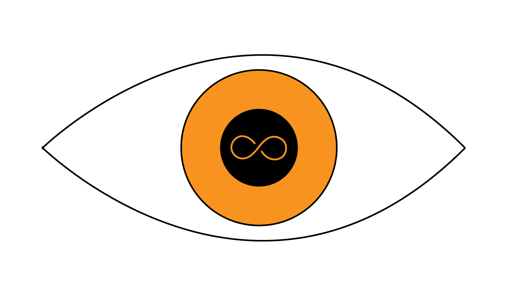

<aside class="off-canvas position-left" id="left-off-canvas" data-off-canvas>
  <ul class="vertical menu" data-drilldown>
     
    <li><a class="float-center">
      <i class="fa fa-cubes fa-2x"></i>
    </a></li>
    <!-- User Menu-->
    <li>
      <a href="#">User</a>
      <ul class="vertical menu">
        <li><users-list></users-list></li>
      </ul>
    </li>
    <!-- Event Menu-->
    <li>
      <a href="#">Event</a>
      <ul class="vertical menu">
        <li><events-list></events-list></li>
      </ul>
    </li>
  </ul>
</aside>

